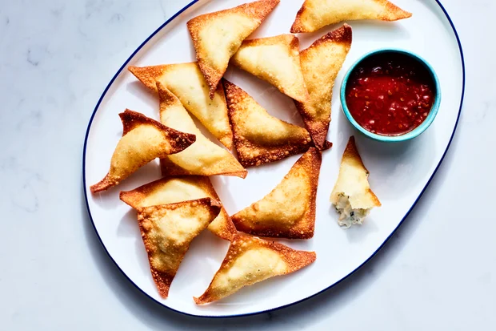
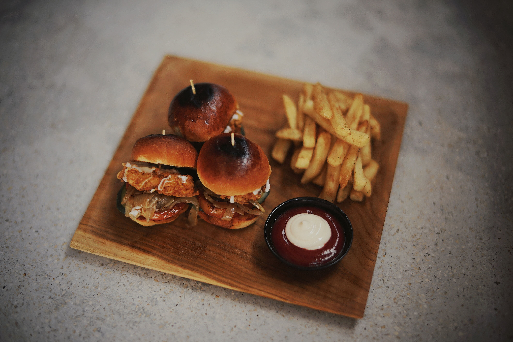
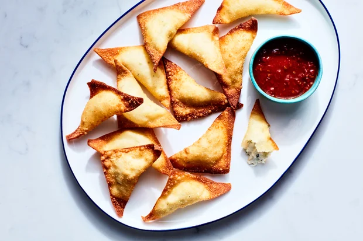
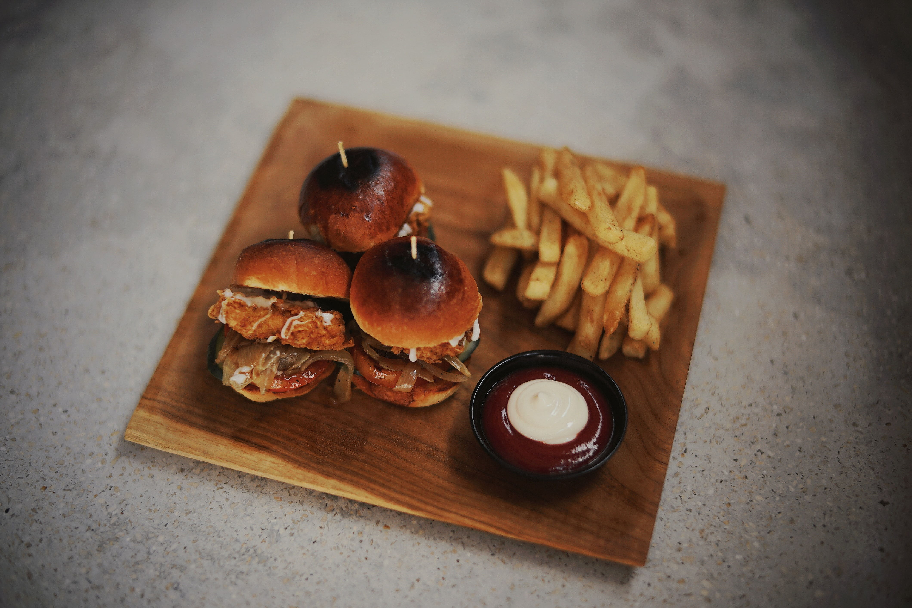

Starters
- Crab Rangoons
- lump crab meat with a semi-spicy dipping sauce 10
Classics
- Clam Chowder
- clams, bacon, potato, celery, oyster crackers 5
- Stuffies
- 3 baked top neck clams, smoked linguiça, lemon, bread crumbs, house hot sauce 9
- Baked Pimento Crab Dip
- jumbo lump crab, Tillamook cheddar, green tabasco, Old Bay crab chips, scallions 17
- Nashville Hot Soft Shell
- griddled white bread, pickled green tomatoes, black garlic honey 20
- Crab Fettucine Alfredo
- aldente fettucine with our special blend of alfredo sauce. topped with freshly caught crab meat 20
Salads
- Crab Cobb
- jumbo lump crab, iceberg lettuce, hard boiled egg, bacon, avocado, blue cheese, cherry tomatoes 19
- Little Gem Casesar
- parmesan, croutons, anchovy 15
Sandwiches
Choice of Side
- New England Clam Burger
- 2 ground chuck patties, American cheese, lettuce, tomato, pickle, mayo, potato bun 16
- North Shore Roast Beef
- bbq sauce, horseradish cream, American cheese, onion roll 16
- Lobster Roll
- Choice of dressed or buttered, split top bun 26
- Crispy Fish Sandwich
- lettuce, pickled shallot, tartar sauce, chile 16
- Fried Chicke Sliders
- spicy mayo, caramelized onions, brioche bun 16
- Pon Happy Meal
- Choice of sandwich, Cape Cod chips, stuffie, whoppie pie, 12oz Narragansett lager 21
substitute Lobster Roll / add 10
Fresh Catch Plate
Build your Fresh Catch Plate by selecting your fish and preferred preparation. Pair your fish with one sauce and two sides.
- 1.Fish
- Maryland Rockfish / 25 Flounder / 24 Golden Tilefish / 26
- 2.Preperation
- Grilled, Charbroiled, Seared
- 3.Sauce
- Red Pepper Romesco, Cilantro Chimichurri, or Lemon, Butter, Caper, Parsley
- 4.Sides
- Pick Two - Cucumber Watermelon Salad, Street Corn Salad, Kaleslaw, Fries, Mac & Cheese, Grilled Broccoli Rabe
Sides
- Cucumber Watermelon Salad
- grilled cucumber, watermelon, feta, almonds, mint 5
- Street Corc Salad
- grilled corn, lime-sriracha mayo, cilantro, queso fresco 5
- Kaleslaw
- lemon-honey vinaigrette, kale, purple cabbage, carrots 4
- Grilled Broccoli Rabe
- grilled broccoli rabe, garlic, chili flake, pine nuts 5
- Mac & Cheese
- fontina, parmesan, cheddar, garlic bread crumbs 5
Desserts
- "Crab" Cake
- Serves 4. A crab-shaped, vanilla cake with chocolate icing 15
Family Meal- Serves Four
Meal offerings will change weekly! Check back for menu changes.
- Porchetta
- boned, rolled, and tied slow-roasted pork belly, served with grilled broccoli rabe, Mac & Cheese, parker house rolls, and whoopie pies 70
Oysters
- Dozen Shucked Oysters
- Choice of local Chesapeake or New England oysters, lemon wedges, cocktail sauce, seasonal mignonette 20
 


